ggsvelte visual evidence (fresh, 2026-07-13)
Result: headless renderToSVGString produced real charts for 23 sampled geoms (0 failures). Docs VR path (Svelte <GGPlot>) also ready=true for 5/5 sampled examples including canvas stratum.
Headless SVG → PNG
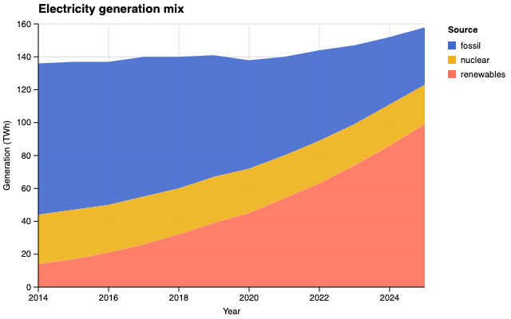
area 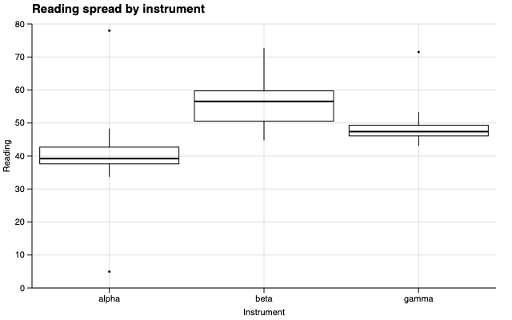
box 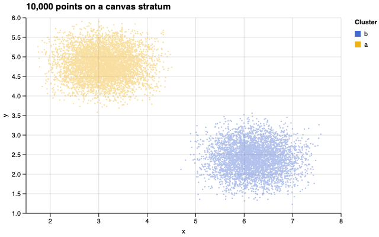
canvas 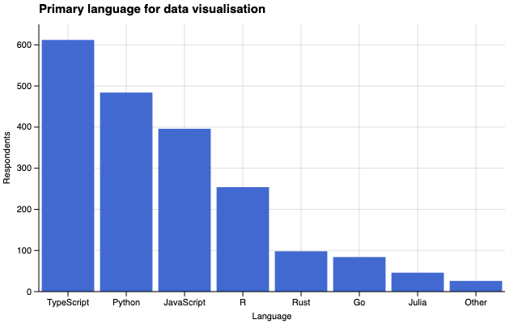
col 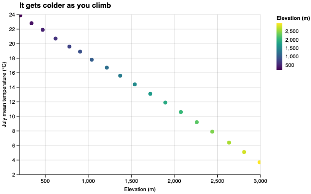
continuous 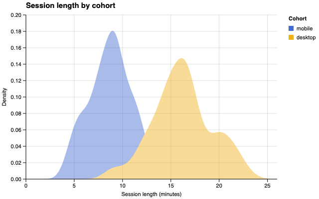
density 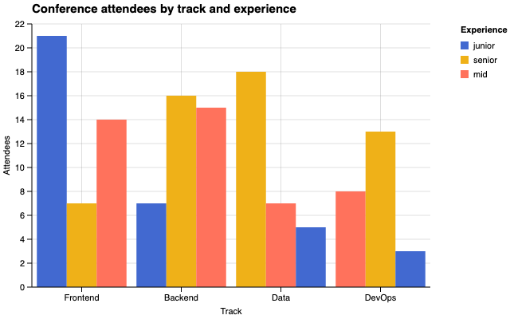
dodged 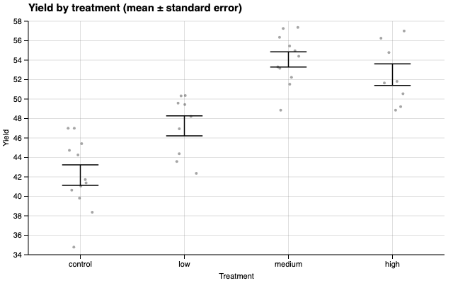
errorbar 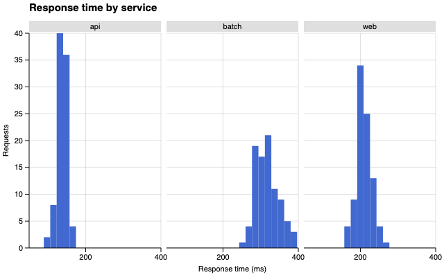
facet 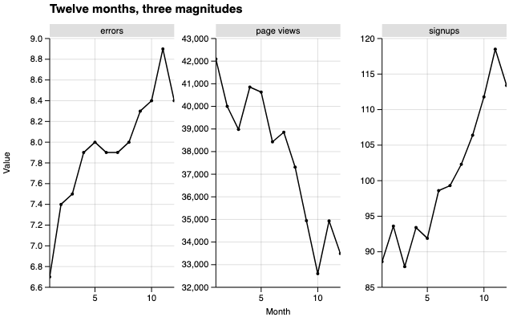
freeY 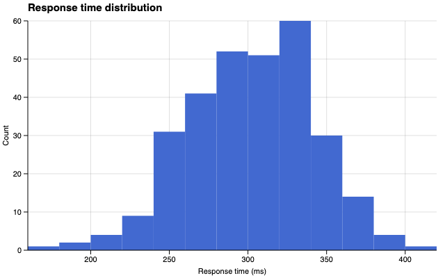
hist 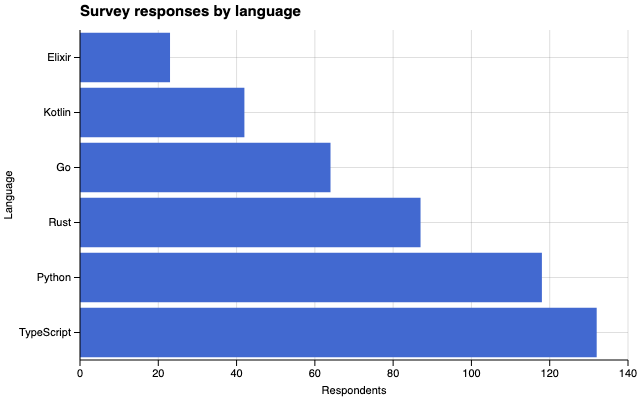
horiz 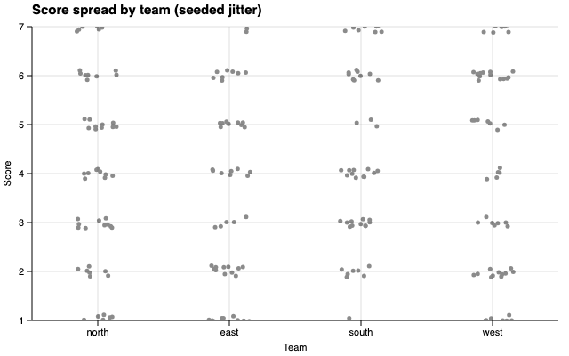
jitter 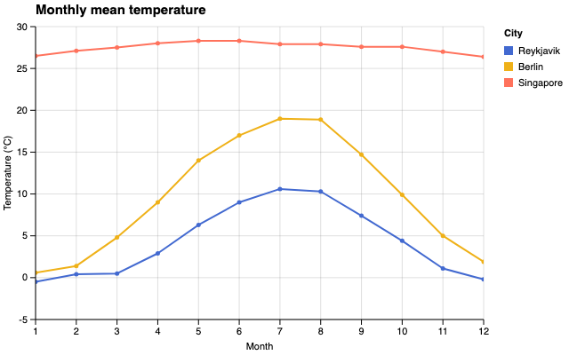
line 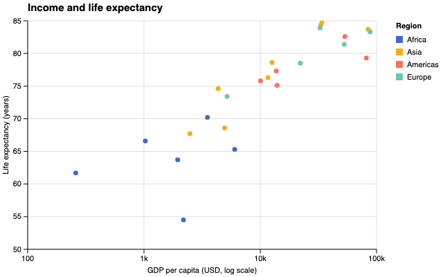
log 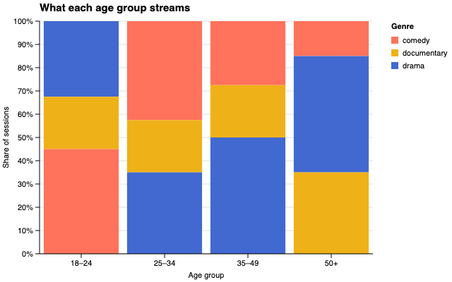
props 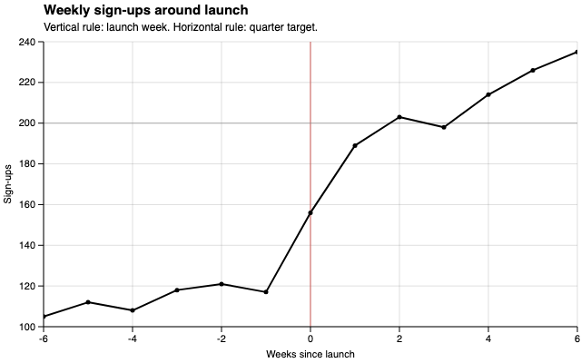
rule scatter 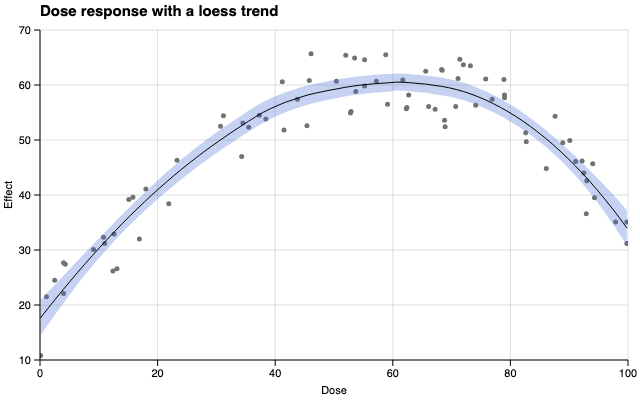
smooth 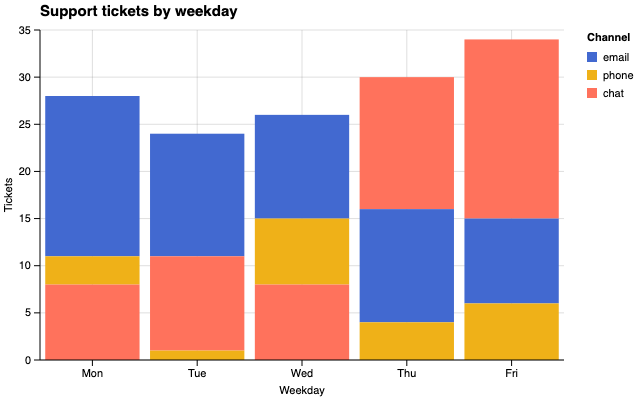
stacked 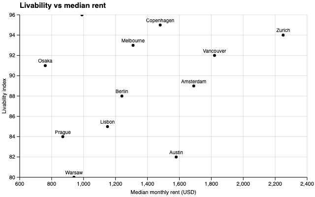
text 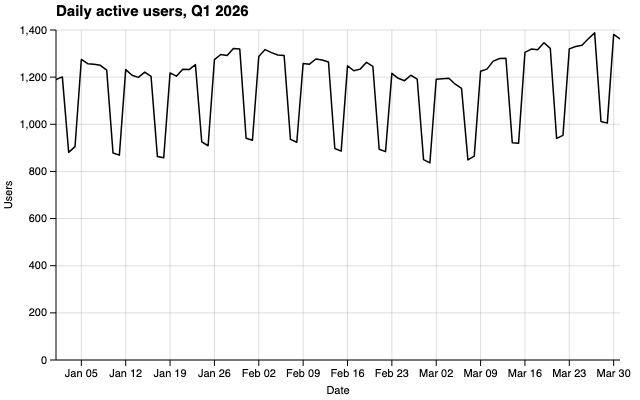
time 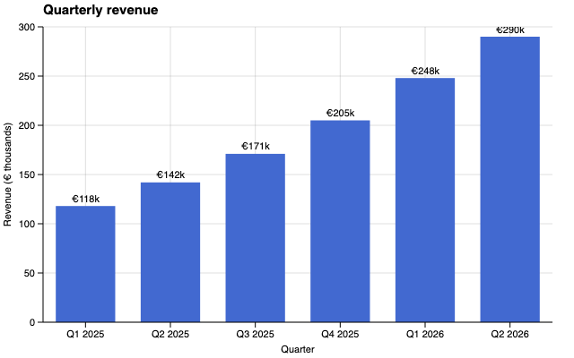
valueLabels Docs site VR path (built static site)
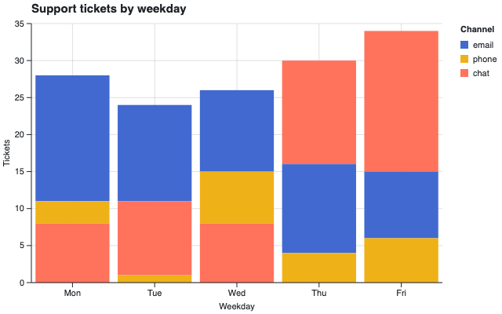
docs: bar-stacked-light.png 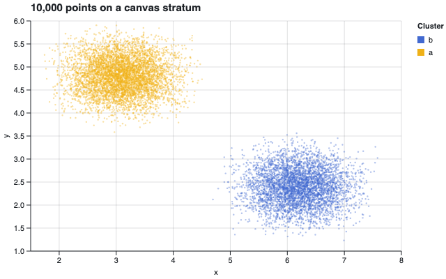
docs: point-canvas-scatter-light.png 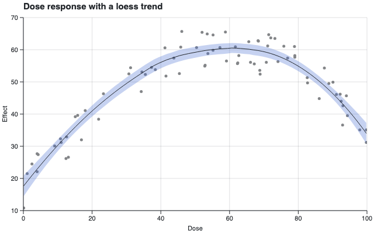
docs: smooth-loess-scatter-light.png 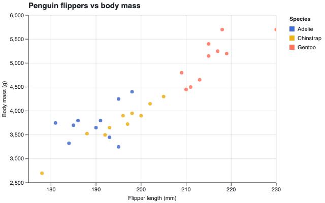
docs: point-scatter-color-light.png 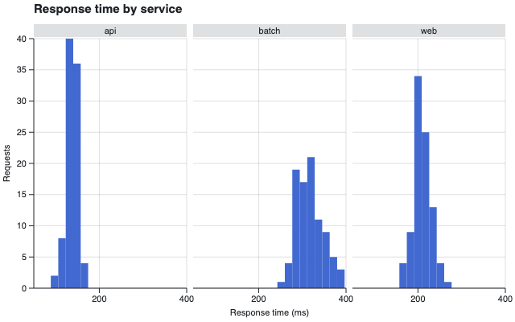
docs: facet-wrap-light.png